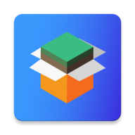

MCinaBox

下载
版本:0.1.4
MCinaBox
是一个开源项目，目标是构建并发展一个运行在Android系统上的Minecraft Java版的启动器。
前端
提供用户管理、Minecraft版本管理、Minecraft游戏控制器、Minecraft启动参数生成、配置后端等和功能，减少完整的启动器开发的工作量。配置管理
后端
提供JRE运行环境、Minecraft运行环境等功能。核心